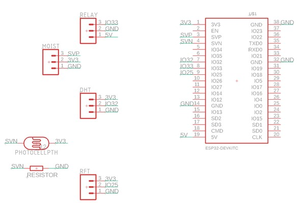
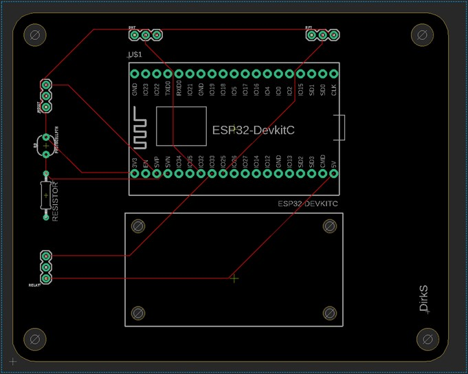
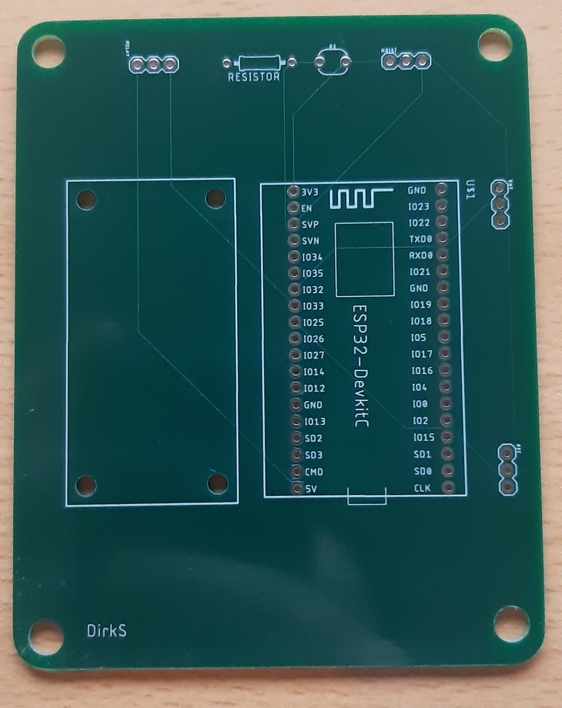

Voor het ontwerp van de PCB (printed circuit board) ook wel printplaat heb ik gebruik gemaakt van de software van
Eagle. Rechts in beeld is de ESP te zien. En links de aansluitingsmogelijkheden voor de weerstandjes, sensoren en
relay die nodig zijn om het plantwatersysteem te laten werken. Deze afbeelding is de schematische weergave van het
bord. In deze fase is er nog niet gedefinieerd waar welke aansluiting waar zit, hoe de stroomdraadjes lopen, en hoe
groot de PCB wordt.

Bord ontwerp
De volgende afbeelding geeft de board-weergave weer. In deze fase heb ik daadwerkelijk de PCB ontworpen, zo heb ik
de grootte van het bord bepaald en de stroomdraadjes laten lopen. Hiervoor heb ik echter wel de functie
“auto-router” voor gebruikt.

Nadat het ontwerp klaar was kon ik het opsturen door Matthijs (docent workshop) en hij zorgde ervoor dat de printplaat gefabriceerd werd in China.
Eenmaal gefabriceerd ziet mijn printplaat er zo uit.
